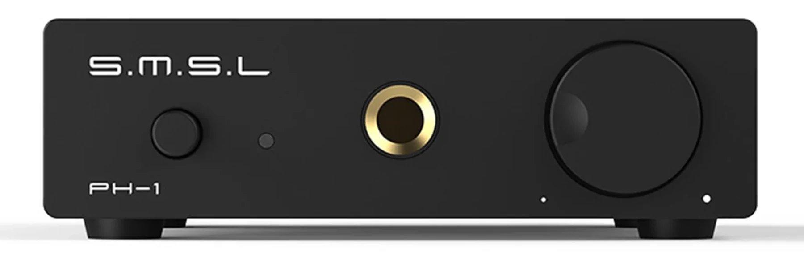

SMSL PH-1

Компактный фонокорректор для подключения винилового проигрывателя к линейному входу усилителя.
Дополнительные фотографии
Технические характеристики
| Тип | Фонокорректор |
|---|---|
| Картриджи | MM |
| Вход | RCA phono |
| Выход | RCA line |
| Управление | Регулятор уровня на передней панели |
Сильные стороны
- Компактный настольный формат
- Простое подключение
- Отдельная регулировка выходного уровня